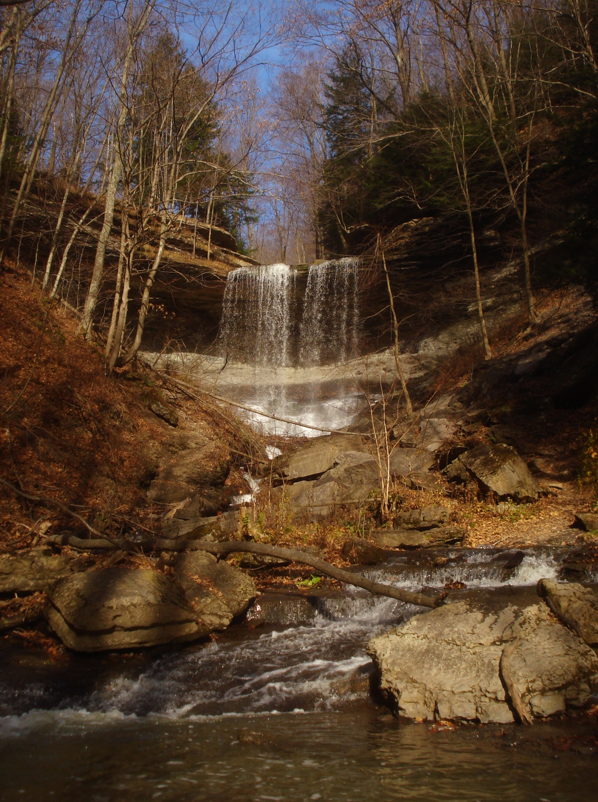
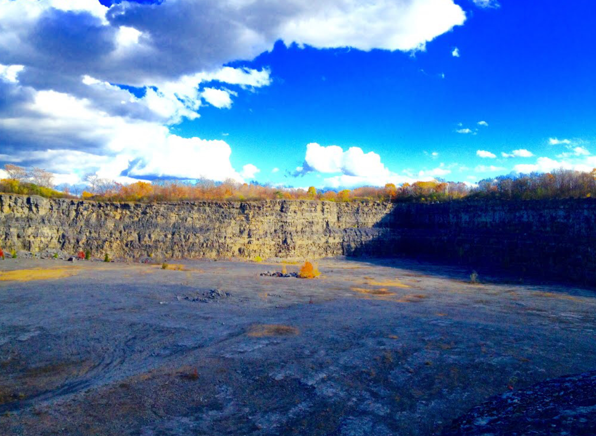

Land is finite and we cannot simply restore the environment to an untouched state which makes it ever more important that we're making sustainable decisions for our land use to conserve our resources and environment for future generations. This map aims to demonstrate a mosaic of sustainable and unsustainable land uses throughout Onondaga County. I have chosen just a few types of land uses to discuss their overall effects on the environment and community.
Sustainablility
Green points on the map represent land that has been set aside or that play vital roles in the protection and sustainability of the environment. The points on the map represent only a small portion of the work being done to protect green spaces for communities and future generations to use. Locations include: Nature Preserves, Management Areas, Parks, Nature Conservation Areas, and more.
Unsustainability
Red points on the map represent unsustainable land uses that degrade the natural environment and leave irreversible destruction on the landscape - stains that future generations will be stuck with. Many of these locations and their effects are not visible at face value, but their effects are felt and/or viewed long after they're gone. Locations include: Superfund Sites, Gravel Pits, Gas Stations, Golf Courses, Cemeteries, Large Roadways, and more.
UnsuStainability
Gravel pits are the perfect example of stains on the landscape from poor land uses. The Jamesville Quarry South of I-481 is roughly the same width as Syracuse's downtown. Thornden Park to the Marriott is just over 1 miles across like the Quarry pictured. Images via Google Maps
A Landscape of Many Uses

Unique Areas
Conservation, Natural, Unique, and Recreations areas are protected properties typically owned by the government or non-profits with the sole purpose to protect that land from development and maintain it for community use. (1,2) Pictured: Labrador Hollow Unique Area

Gravel Pits
Pits, Quarries, and other Mining Operations are the most visibly destructive land use on our map. These businesses cut-out ecosystems to harvest the materials beneath. Once the self-consuming operation has harvested all the useful material, the land is abandoned or sold off for development or rehabilitiation but often isn't restored to its former ecosystem. (3,4) Pictured: Abandoned Dewitt Quarry
Municipal Parks
Throughout Syracuse and other municipalities in Onondaga county, there are many parks of all sizes available to the public. These parks, designated by the City or Town, are open for public use and are protected from development. Amenities available to the public to enjoy include Trails, Fields, Athletic Courts, Pools, Playgrounds and much more. Pictured: Elmwood Park
Cemeteries
Cemeteries, though viewed as green areas, have shown to be quite harmful to ecosystems around them. Oakwood Cemetery in Syracuse (just south of SUNY ESF) was even the first city park of Syracuse. Studies have found that traditional cemetery burrials lead to higher levels of heavy metals, bacteria, fungi, and viruses in the soil and ground water around cemeteries. (5) Pictured: Oakwood Cemetery
Cleanup Sites
Onondaga Lake and other Superfund sites are areas that have been designated by the EPA as areas of significantly higher pollution and undergo large-scale cleanup efforts to restore the area and return the toxin levels to healthy levels. Land uses like these help undo the destruction from industry and work to better the environment. Onondaga Lake pollution resulted from over 100 years of industry waste being dumped into the lake and tributary. (6,7) Pictured: Onondaga Lake
Car-centered Development
Shopping plazas, Interstates, and Gas Stations are all built around car traffic and take tremendous tolls on the environment. Run-off from small fuel spills from fuel stations have been observed in studies to contain known carcinogens. Large roadways and parking infastructure have also been linked to water pollution from oil, grease, metals, and sediment runoff into local waterways. These land uses pollute the environment overtime and are the direct result of car-centered development. Pictured: Destiny USA
Read more
Onondaga Lake with was one of the worst environmental stains until it's cleanup.
Once one of the most polluted lakes in the world has been the subject of a monumentous cleanup effort since its days of rampid waste dumping. Read more below